Swiss Geo Layers
Toggle Swiss geodata overlays: hiking trails, nature reserves, cable cars, avalanche zones
geo.admin.ch WMS

MeteoSwiss
Live Swiss weather stations, climate normals, and RainViewer radar overlays
MeteoSwiss + RainViewer

Open-Meteo
Multi-model weather forecasts with elevation correction — no API key needed
Open-Meteo
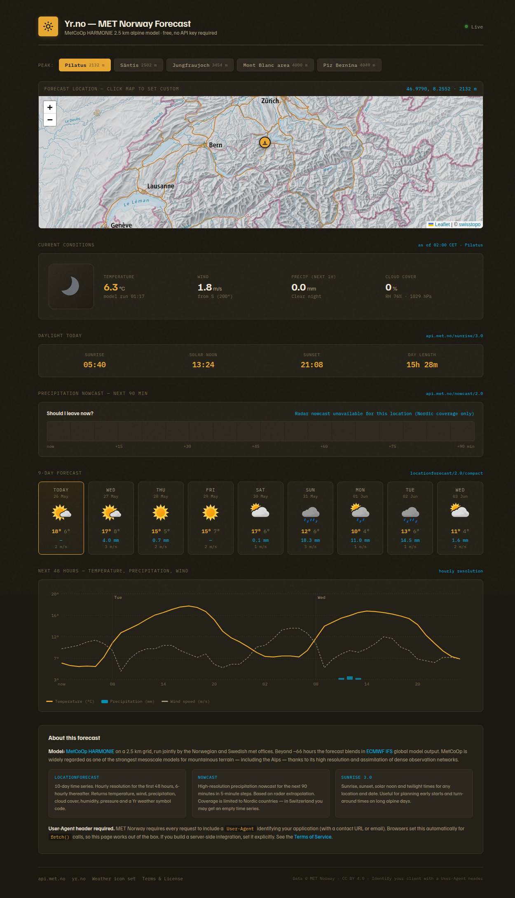
Yr.no (MET Norway)
MetCoOp HARMONIE forecast from Norwegian Met — strong alpine model, free, no key
api.met.no
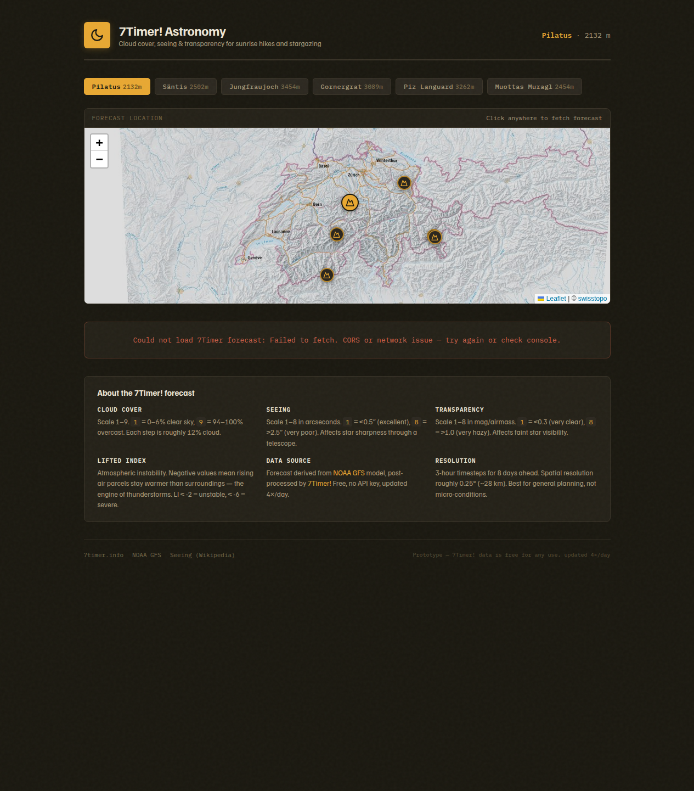
7Timer! Astronomy
Cloud cover, seeing, and transparency forecasts for sunrise hikes and stargazing
7Timer! (NOAA/CMA)
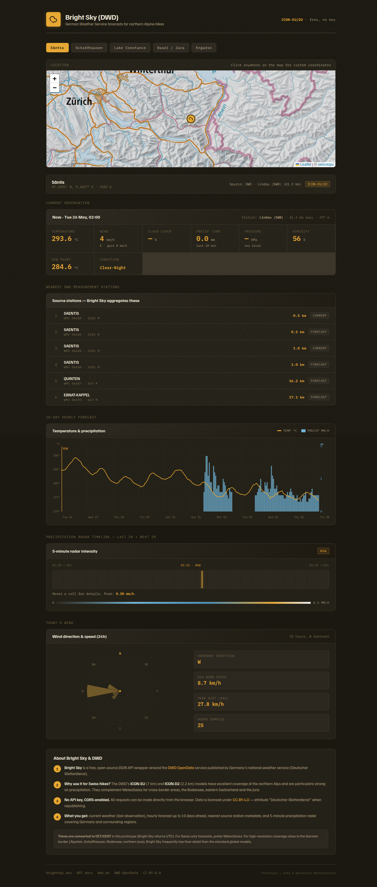
Bright Sky (DWD)
German Weather Service forecasts via Bright Sky — great for northern Alpine cross-border hikes
brightsky.dev (DWD)

OSM Points of Interest
Query OpenStreetMap for hiker POIs: water, huts, shelters, viewpoints, parking
Overpass API
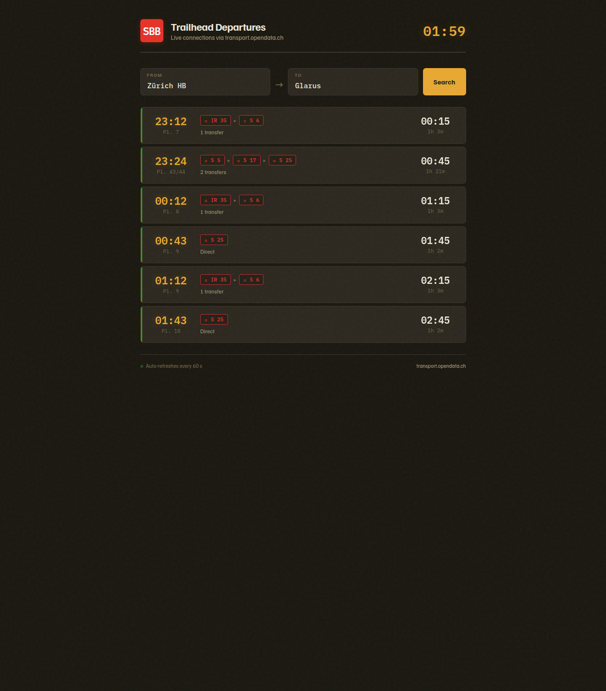
Swiss Transit
Live SBB/public transport connections and station search
transport.opendata.ch
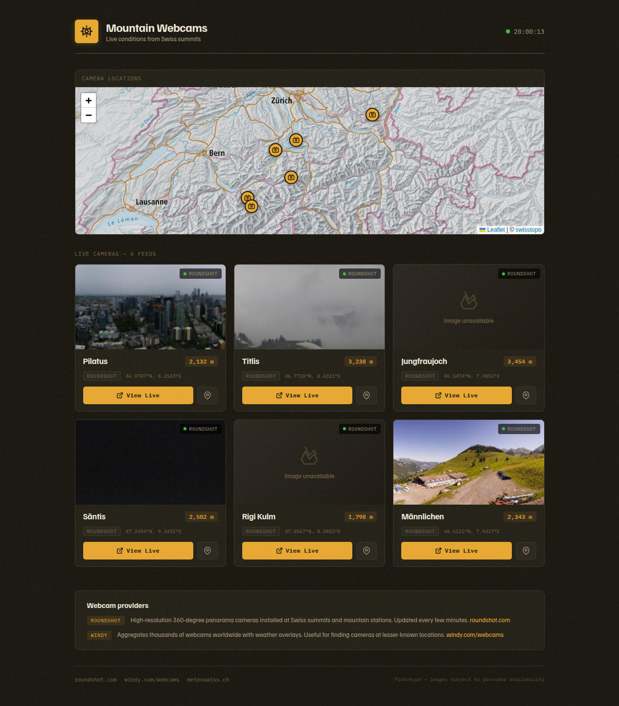
Mountain Webcams
Live camera feeds from Windy.com for checking Swiss alpine conditions
Windy Webcams API
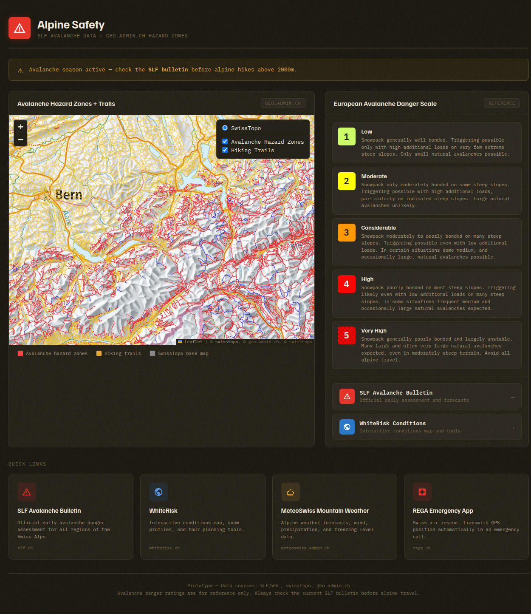
Avalanche Safety
SLF avalanche bulletin data, danger scale, and WhiteRisk links
SLF / WSL
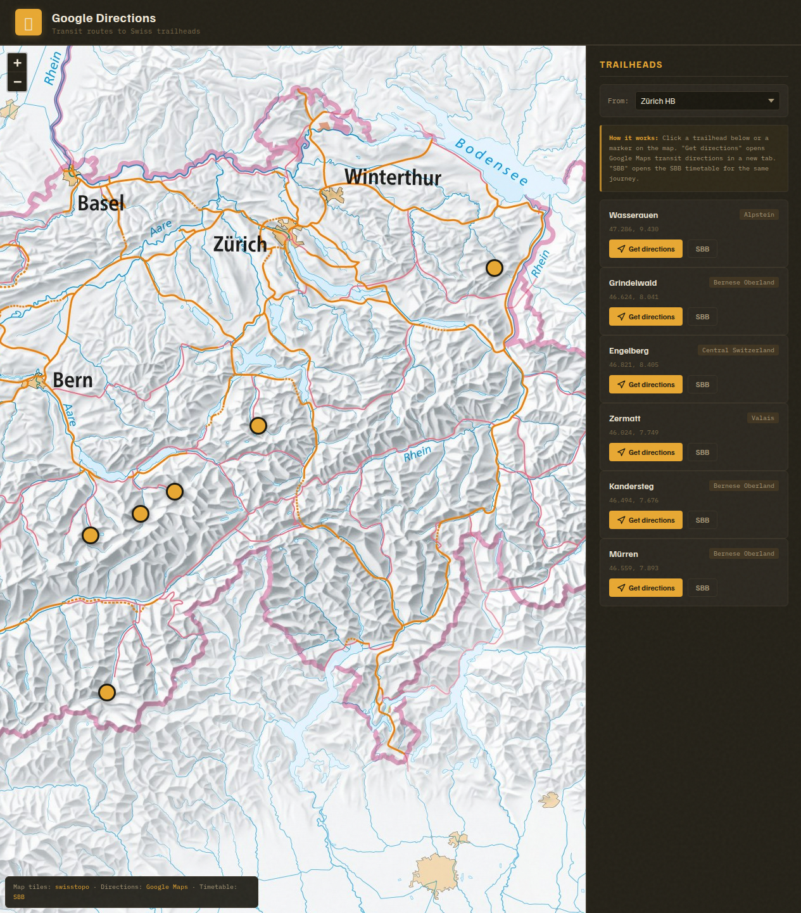
Google Directions
Transit/driving directions to trailheads via Google Maps embed
Google Maps

SAC Alpine Huts
Swiss Alpine Club huts with capacity, wardened season, and booking links
SAC-CAS
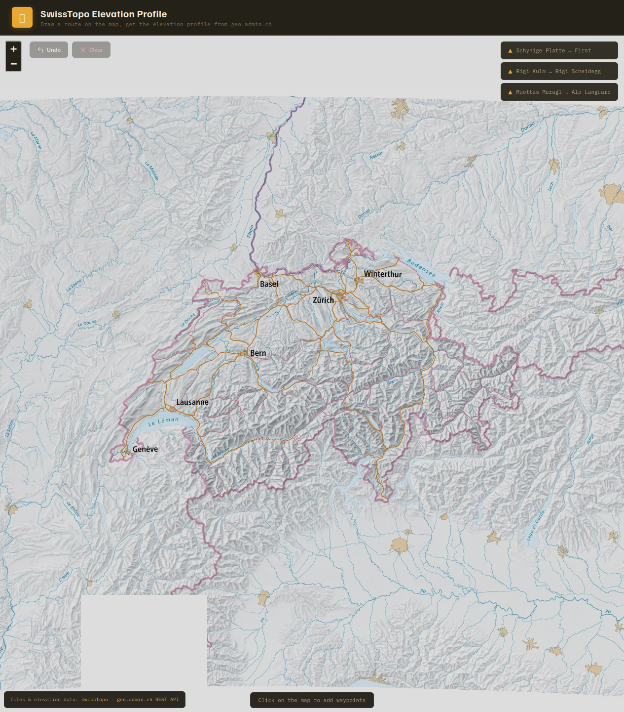
Elevation Profile
Draw a route on the map and fetch the elevation profile from SwissTopo
geo.admin.ch REST
Hazard Markers
Pin chain sections, exposed ridges, stream crossings along the route on individual hike pages
Feature integration / worktree
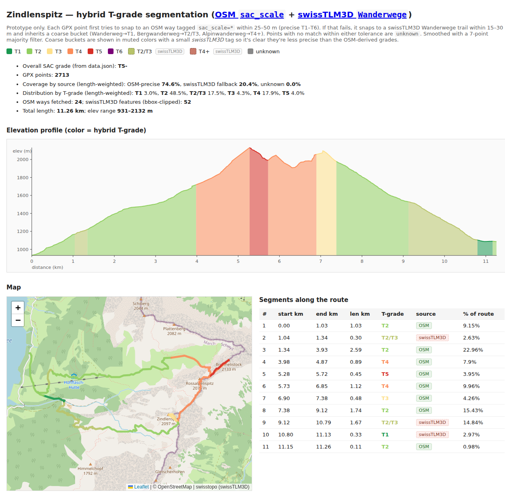
SAC T-grade segments (hybrid OSM + swisstopo)
OSM sac_scale primary, swissTLM3D Wanderwegart fallback for gaps — best coverage + T1–T6 precision
OpenStreetMap + swisstopo

Trail Conditions
Trail status and closures across Swiss cantons with seasonal context
SchweizMobil / Cantons
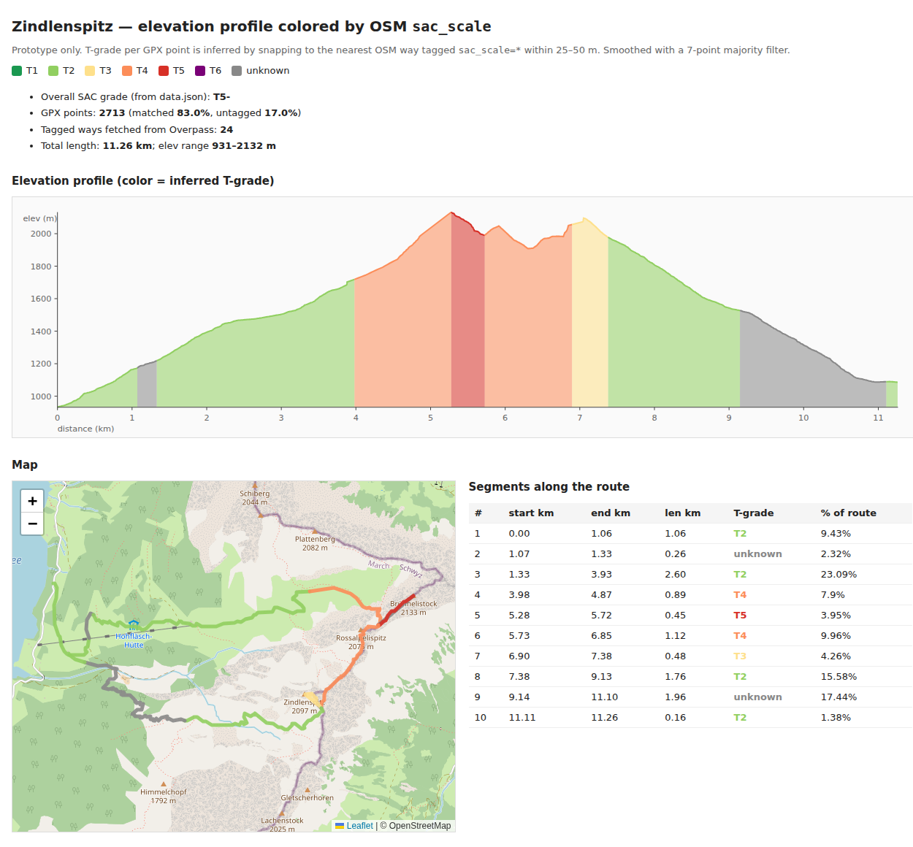
SAC T-grade segments (OSM)
Per-segment T1–T6 along a GPX track from OSM sac_scale tags via Overpass
OpenStreetMap (Overpass API)
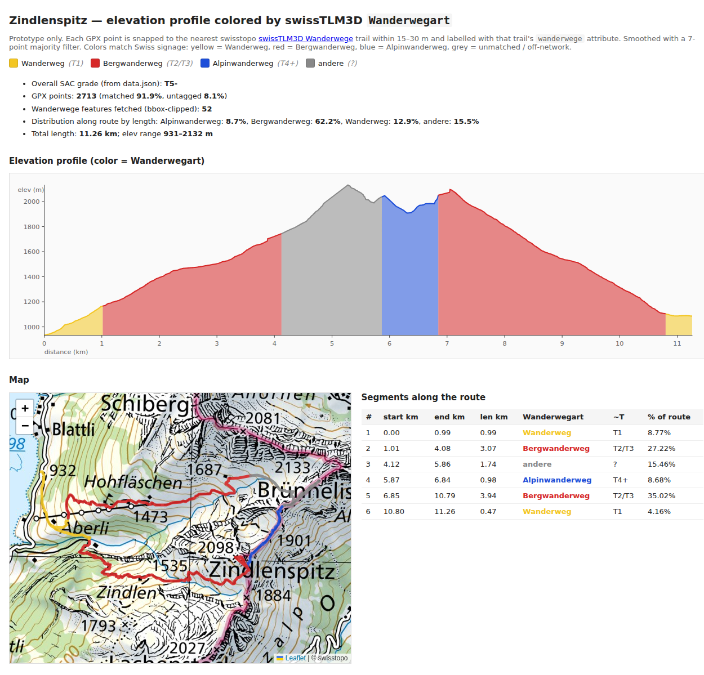
SAC T-grade segments (swisstopo)
Per-segment Wanderweg/Bergwanderweg/Alpinwanderweg from swissTLM3D — authoritative but 3-class only
swisstopo (swissTLM3D Wanderwege)
QR Code on Hike Pages
QR in the hero header encoding the page URL — desktop-to-phone hand-off
Feature integration / worktree
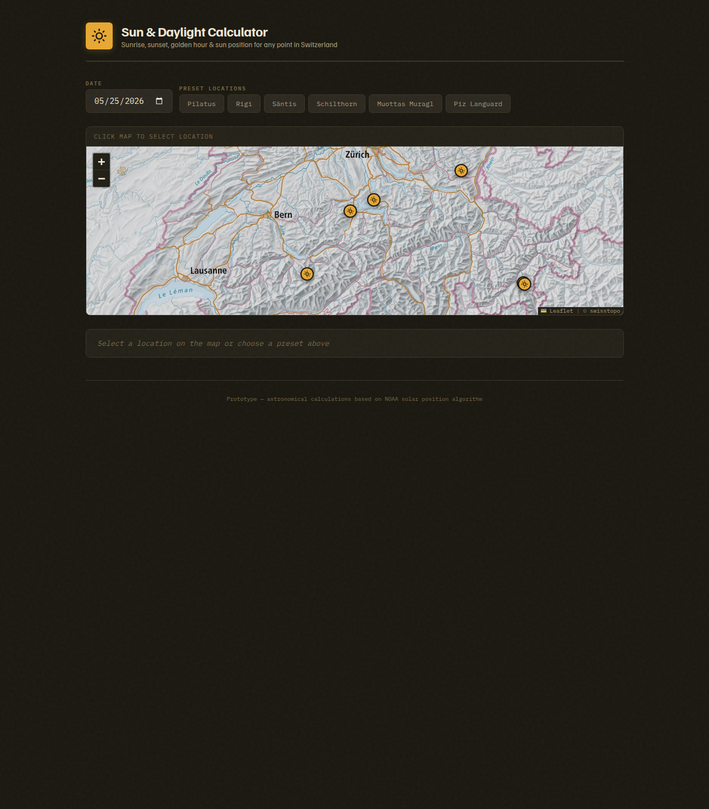
Sun & Daylight
Sunrise, sunset, golden hour, and sun arc for any Swiss location and date
SunCalc (client-side)
Offline Cache (PWA)
Service worker + manifest so hike pages work in airplane mode after a visit
Feature integration / worktree
Print / PDF Export
Pure-CSS print stylesheet + inline-SVG route snapshot — works over file:// with no JS deps
Feature integration / worktree
Live Transport Widget
Inline next-3 outbound + last-3 return connections via transport.opendata.ch, on every hike page
Feature integration / worktree
GPX → Phone-Native Apps
One-tap Download GPX / Web Share / SchweizMobil / Trailhead deep-link / QR — pragmatic, no fake 'open in Komoot' buttons
Feature integration / worktree
3D Flythrough
Cinematic MapLibre camera flythrough following the GPX ascent on every hike page
Feature integration / worktree